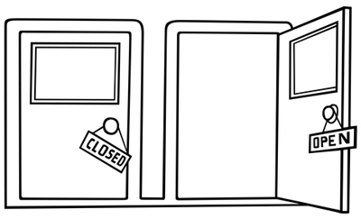

|  |
"Writing, like all creative art, is a difficult exercise: you must be able to simultaneously open the door and close the door." AL Monfret. |
Writing is like traveling — not a single day goes by without something new happening.
When writing, I am constantly rooting out clichés: banal stories, commonplace metaphors, formulaic writing, insipid characters.
In the end, what really counts is to be authentic. Similarly, when traveling, it is essential to know and respect the rules of the country, but useless to try to imitate the locals. That would sound false. Keeping your own identity while embracing and respecting the native customs is the idea I have of the traveler.
Both writing and traveling teach you to explore yourself and discover others. The more I dig into my characters for my new novel, the more I realize how complex and different human beings are.
The traveler is the one who matters the most in the journey, just as it is the character who drives the story, and not the other way around.
A real voyage creates surprise. I have some idea of my story when I start, I know my characters and their beliefs, but I leave the rest to chance. Chance often decides better than we do.
To paraphrase Nicolas Bouvier :
"When writing, the best thing is to get lost. When you are lost, ideas give away to surprises, and it’s then —and only then— that the story really begins."